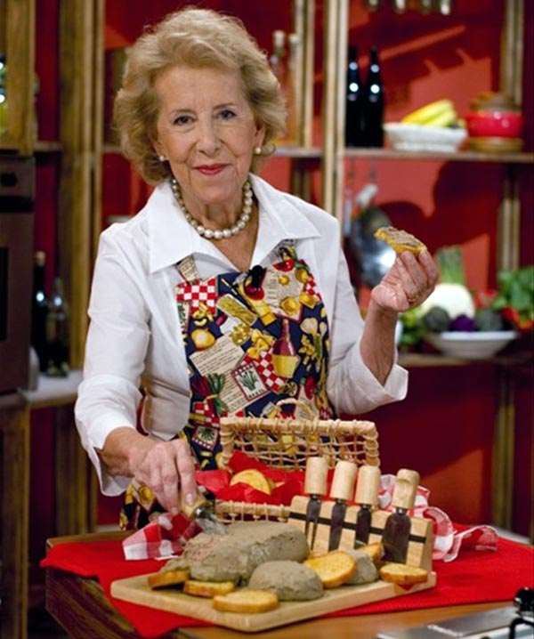

Damian Betular

Es un pastelero y cocinero argentino. Fue el chef principal del hotel Palacio Duhau Park Hyatt Buenos Aires y el chef de pastelería ejecutivo de Duhau Pâtisserie, hasta enero del 2022, aunque es más conocido por su rol de jurado en los reality show de Argentina Bake Off Argentina y MasterChef Celebrity Argentina. Nació el 20 de octubre de 1982 en Dolores, provincia de Buenos Aires, Argentina; localidad donde vivió hasta finalizar sus estudios secundarios en una escuela industrial en cinco años en lugar de los seis años previstos. Viajó a ganar experiencia en pastelería en destinos como Londres y Nueva York, donde se perfeccionó en el Culinary Institute, más tarde se capacitó en viajes en México y Japón. Realizó sus prácticas profesionales de cocina alemana en Córdoba y en el Hotel Patagonia Plaza en San Martín de los Andes y trabajó en el restaurante Sucre, donde armó su primera carta de postres guiado por la jefa de pastelería Pamela Villar, y en el restaurante Manero. Los productos artísticos que realiza en Duhau Patisserie son creaciones de diseño de pastelería y chocolatería. El proceso creativo lo comienza con un boceto para luego aplicar técnicas de alta pastelería seleccionando cuidadosamente ingredientes de la más alta calidad nacional y regional Brindó clases de pastelería en la Feria Masticar, Festival Bocas Abiertas, Festival del Chef patagónico (Villa Pehuenia) y en ciclos de cocina como Sabores de Montaña o Sabores patagónicos en Villa La Angostura, entre otros. El amor por la cocina y, en especial, por la pastelería los adquirió de su mamá y de su abuela Considera a Osvaldo Gross, Pamela Villar y Beatriz Chomnalez sus maestros en la profesión.
Choli Berreteaga
María Esther Brañeiro más conocida como Choly Berreteaga, fue una cocinera profesional, conductora de televisión y escritora argentina. Choly le enseñó a cocinar a varias generaciones de argentinos, no solo con sus participaciones televisivas, sino también con sus libros, entre los cuales están: Choly, 600 recetas fáciles; Cocina simple para la vida moderna; La cocina de nuestra tierra; Dulces, conservas y embutidos; Cocina antidelivery y Recetas para las cuatro estaciones
Fue una de las cocineras más emblemáticas de la Argentina. Editó más de 50 libros y trabajó en televisión desde la década del 60. Fue una de las cocineras más emblemáticas de la Argentina.Choly tuvo tres hijos. Fue profesora de piano, francés y gastronomía, pero una participación en un segmento para cocineros no profesionales en «Buenas tardes, mucho gusto», uno de los programas míticos de la TV argentina, le cambió la vida. El ciclo tenía un segmento que se llamaba «Hoy colabora usted». Choly mandó una carta para participar: allí fue, cocinó y terminó incorporándose al staff del programa, al igual que ocurrió con el médico Alberto Cormillot.Isabel Vermal

Nació en Buenos Aires, estudió diseño industrial y trabajó como Gerente de marketing y ventas para diferentes empresas durante muchos años hasta que su hobby se transformó en su labor de cabecera. Isabel había estudiado pastelería en el Colegio de Cocineros Gato Dumas y se divertía cocinando para su familia y amigos. Más tarde, con la ayuda de su familia montó su propio negocio, lugar donde se conjuga el detalle y la minuciosidad del diseño con los sabores de la repostería. En Smeterling Patisserie sus creaciones brillan por su originalidad y delicadeza. A partir del año 2012, forma parte del staff de chefs de elgourmet.com y deleita al público con sus increíbles creaciones